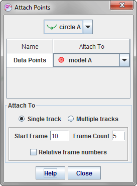
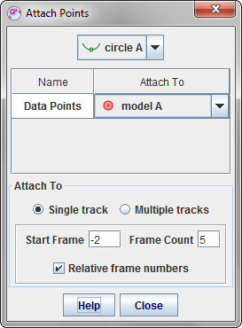
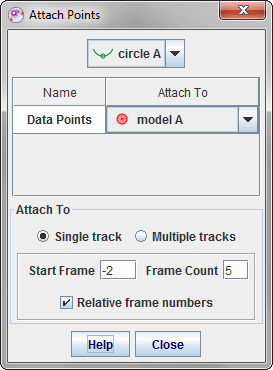
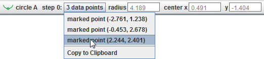

A circle fitter track is a tool for fitting circles and finding their radii and centers. It requires at least three data points, but can fit a circle to any number of points. Points can be marked manually or attached automatically to point masses. Once a circle is fit you can instantly move the coordinate system origin to the circle center(s) with a menu item.
To create a circle fitter, click the Create button  and choose Measuring Tools|Circle Fitter from the popup menu. Multiple circle fitters can be created as needed.
and choose Measuring Tools|Circle Fitter from the popup menu. Multiple circle fitters can be created as needed.
At least three data points are required to fit a circle. When a circle is fit, its radius and center position are displayed on the toolbar as shown below. When a data point is selected, its position is also displayed.

There are two ways to create data points: (a) mark the points manually using the mouse, or (b) attach the points automatically to point masses. The marked and attached data points are weighted equally when fitting a circle.
To mark points manually, shift-click a video frame repeatedly along a circular path. You can mark as many points as you wish; all points are weighted equally in the fit. To move a marked point, select it and drag with the mouse or nudge it using the arrow keys. Also, for marked points you can select them and enter a desired position directly in the x or y toolbar fields as shown above.
By default, marked data points have a fixed position--that is, they are identical in all frames (steps). This means that every step contains the same data points (and resulting best-fit circle), and moving a point in any step affects all.
Of course there are many videos in which a circular object or path of interest changes with frame or time. You can track those changes with marked points only if the circle fitter is first unfixed. To unfix a circle fitter, uncheck the Fixed Position checkbox in its track menu. (Note: it is often easier to track changing circles with attached data points as described in section 4.)
Once the circle fitter is unfixed, marked data points behave as follows:
The circle fitter can automatically create and attach data points to existing point mass tracks including centers of mass, particle models and data tracks. Marked data points (section 2) are not affected and continue to be included in the fit along with the attached points.
To attach points, open the Attach Points dialog shown below by choosing the Attach Points... menu item from its track menu.
There are two options for attaching data points:

 

The fields define the range of frame numbers to which data points will be attached (if the point mass positions are marked). If at least three points are attached then the circle will be fit. Note: the maximum frame count is 20 since little is gained by fitting circles to large numbers of data points.
The frame numbers can be absolute or relative:
The circle fitter toolbar includes a button that displays the number of data points in the current step and enables you to identify and select the points. To see a popup menu listing all points, click the data points button. Moving the mouse over a menu item temporarily selects the corresponding point on the video so you can easily find it; selecting the menu item leaves the point selected.

To move the origin of the coordinate system to the center of the circle in every frame, choose the Move Origin to Center item in the circle fitter's track menu. This is particularly useful when the center of the circle is outside the video frame (e.g., a video of a pendulum bob that does not include the support).
Locking the circle fitter prevents any changes to the marked data points. Attached points can still affect the circle, however. Lock the circle fitter by turning on the Locked property in its track menu.